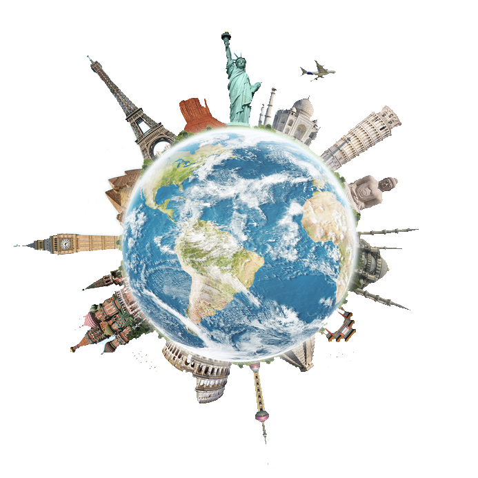

Deseja viajar e está sem destino?
Nós temos a solução!
Já vamos solucionar o seu problema, mas primeiramente você deverá seguir os seguintes passos:
1º Passo - Escolher um dos 6 continentes (Africa, Europa, Oceania, America e Antardida );
2º Passo - Decidir o país do continente escolhido;
3º Passo - Optar por um dos estados mais visitados do país decidido;
4º Passo - Definir a cidade com mais pontos turísticos.

Arrumando a Mala
10 coisas que não podem faltar na sua bagagem:
1 - Pasta de Documentos;
2 – Travesseiro de Viagem;
3 – Caneta;
4 – Protetor auricular e máscara para os olhos;
5 – Adaptador para tomadas;
6 – Cadeados e lacres de segurança;
7 – Remédios básicos;
8 – Kit higiene;
9 – Carregador de bateria portátil;
10 – Comprovantes de passagem e hospedagem.
21 Curiosidades sobre Viagens ao redor do mundo
A paixão por viagens pode nos levar não só à pesquisar informações sobre o destino desejado, mas também nos inclina a navegar por fatos interessantes e bem curiosos que existem mundo afora.
1- Mar Morto na Jordânia é o ponto mais baixo da terra.
2- A maior marina artificial do mundo fica em Dubai.
3- Existem 7 Oásis no Egito.
4- Em Dubai, as viaturas policiais não são nada populares, você vai encontrar modelos como Camaro, Ferrari, Lamborghini, Mercedes e outros.
5- O Deserto do Sahara é o maior deserto do mundo.
6- O maior shopping do mundo fica em Dubai, o Dubai Mall.
7- Existem caixas eletrônicos em Dubai onde você pode sacar barra de ouro.
8- O shopping mais antigo do mundo fica na Turquia, o Grand Bazar.
9- Museu do Louvre é o museu mais visitado do mundo.
10- Canadá tem o equivalente a 60% dos lagos do mundo.
11- Museu do Louvre é o museu mais visitado do mundo.
12- Palm Jumeirah, é uma das maiores ilhas artificiais do mundo, fica localizada em Dubai.
13- Turquia é o sexto país turístico mais visitado do mundo.
14- A maior mesquita do mundo fica na Arábia Saudita, Mesquita Al Ahram.
15- Dubai promove o maior festival de compras do mundo, Dubai Shopping Festival.
16- No Egito existem mais de 80 pirâmides.
17- Na Austrália há mais de 10 mil praias.
18- Finlândia tem mais de 180 mil ilhas.
19- A Pirâmide de Quéops é a única maravilha do mundo antigo que ainda está de pé.
20- Dubai possui o edifício mais alto do mundo.
21- Um dos dez lugares mais perigosos do mundo fica no Brasil, a ilha da Queimada Grande.